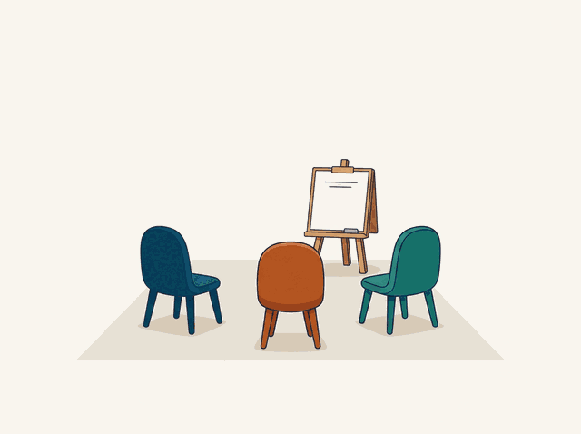

Nota
Esta es la pantalla que el piloto de profesores necesita y que hoy está repartida entre «Participantes» y el resumen. Una sola página: quién entregó, qué falló pregunta a pregunta, y qué llevar a la próxima clase.
Panel de clase / Martes 7 pm — A2
Grupo · 9 estudiantes
Martes 7 pm — A2
Última tarea compartida: Past simple — Worksheet 7B, el jueves pasado.
Entregaron6 / 93 sin empezar
Evaluadas2 / 64 en cola
Aciertos64 %media del grupo
Bloque más fallado#3«Yesterday I ___ to…»
Bloque a bloque
■ correctas · ■ por mejorar
#1
Elige la forma verbal correcta — «She ___ the system well.»
5 / 6
#2
Ordena la frase — «I finished the task yesterday»
4 / 6
#3
Completa la frase — «Yesterday I ___ to the pharmacy.»
1 / 6
#4
Traduce al inglés — «Terminé la tarea.»
3 / 6
#5
Escribe una frase usando «although»
2 / 6
Entregas
9 estudiantesMostrando 5 de 9
Para la próxima clase
Tres cosas concretas
- Irregulares en pasado. 5 de 6 fallaron el bloque #3. Diez minutos de pizarra con go/went, take/took, buy/bought.
- Preguntas en pasado. Cuatro escribieron «Did you went…». Un drill rápido en parejas.
- Conectores. Nadie usó although. Vale la pena presentarlo antes de volver a pedirlo.
Generado a partir de las 6 entregas recibidas.
Grupo del sábado

Todavía no hay entregas
Comparte una actividad con el grupo B1 y aquí verás quién la hizo y qué falló.
Elegir material